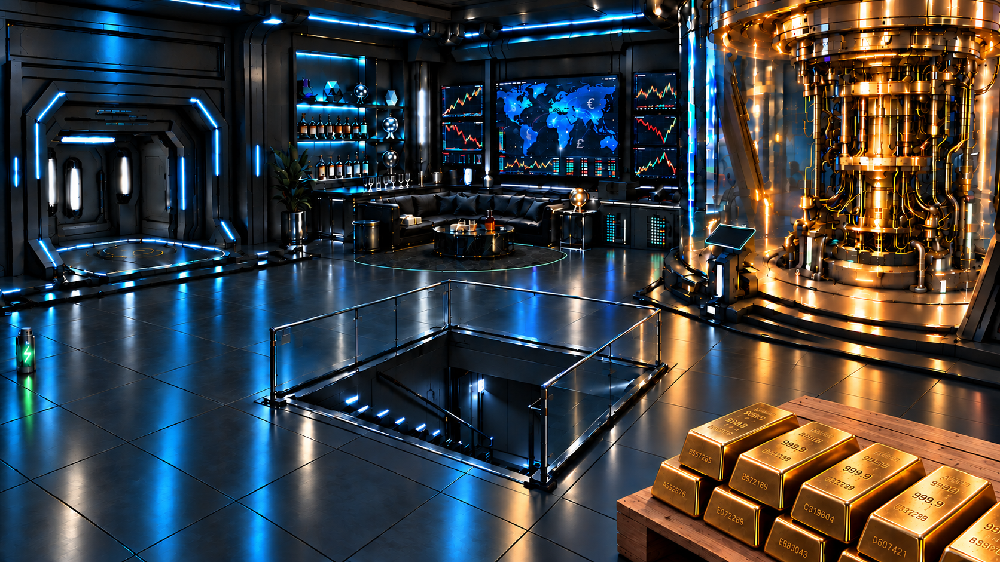

Operation Nullpunkt · Level 2 von 4
Finden und aufladen
Auf den Bildschirmen laufen Finanzdaten aus aller Welt. Der Lord lässt PICO geheime Schlüssel berechnen, um die Verschlüsselung des internationalen Zahlungssystems zu knacken. Dann könnte er geschützte Daten entschlüsseln, Überweisungen manipulieren und fremde Kryptowährungen stehlen. Dir bleibt wenig Zeit.
Plane deinen Flug neu: Nutze die knappe Startenergie zuerst für die grüne Flasche am linken Rand. Finde heraus, was darin steckt und wie es deiner Drohne helfen kann.
Die Kommandozentrale

Noch nicht ausgeführt
Untersuche die grüne Flasche und mache deinen Fund im Flugprotokoll sichtbar.
Fliege zu (−455, −85). Untersuche die Flasche und gib deinen Fund im Flugprotokoll aus.
Hilfe zur Suche aufklappen
- Fund speichern:
fund = drohne.suche_hier() - Fund ansehen:
print(fund)
Fliege zuerst zum Fundort.
Eine Energiezelle! Damit sie den Akku versorgt, muss sie zur Ausrüstung gehören. Lege oben in deinem Code eine leere Liste namens ausruestung an. Ergänze nach der Suche die Aufnahme deines Fundes in diese Liste und starte den Flug erneut.
Plane deinen Flug zur grünen Energieflasche.